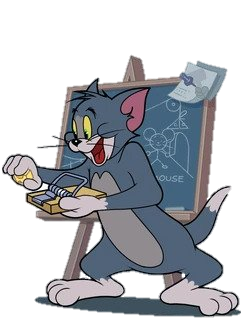

|
Em mais um dia tumultuado no beco, Tom e Jerry se encontraram envolvidos em uma competição
acirrada e cheia de reviravoltas. Dessa vez, o beco estava repleto de caixas misteriosas, cada
uma contendo dispositivos inusitados e perigosos. Sem que percebessem, eles se viram envolvidos
em uma espécie de torneio organizado por um desconhecido "Gato Mágico."
O desafio era claro: ambos teriam que utilizar os dispositivos encontrados nas caixas para
derrotar o outro. Tom, animado com a perspectiva de finalmente superar Jerry, abriu a primeira
caixa e encontrou ratoeiras explosivas. Determinado, ele começou a lançá-las em direção a Jerry,
criando uma sequência de explosões espetaculares.
Jerry, no entanto, não estava para brincadeira. Abrindo sua caixa, ele descobriu um conjunto de
queijos mágicos que o permitiam atacar o gato. Esquivando-se das explosões de Tom, Jerry
retaliava com golpes rápidos, arremessando pedaços de queijo em direção ao seu adversário.
O beco se transformou em uma arena caótica, com explosões, ataques e risadas ecoando por todos
os lados. Cada vez que parecia que um deles tinha a vantagem, o outro surpreendia com uma
estratégia astuta. A batalha atingiu seu ápice quando Tom, em um ato ousado, lançou uma ratoeira
gigante na direção de Jerry.
A explosão foi tão intensa que uma nuvem de queijo se espalhou pelo beco, encobrindo os dois
rivais. Quando a poeira finalmente baixou, Tom e Jerry emergiram, ambos cobertos de queijo e com
ratoeiras penduradas, mas sem vencedor claro.
O Gato Mágico, revelando-se como uma figura enigmática assistindo de longe, declarou que a
verdadeira magia estava na rivalidade eterna entre Tom e Jerry. Com um aceno de sua varinha,
todas as caixas desapareceram, deixando para trás apenas a rivalidade clássica entre o gato e o
rato.
|

|